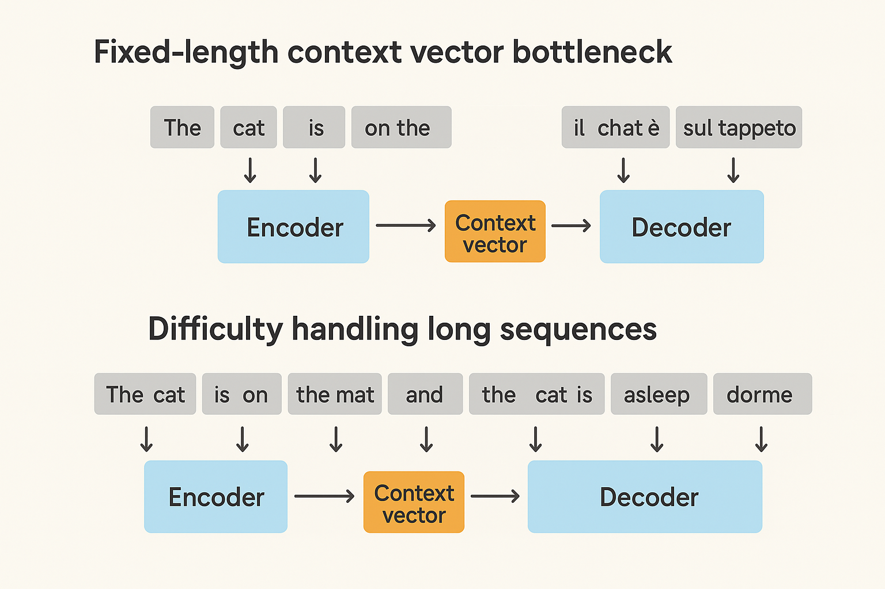
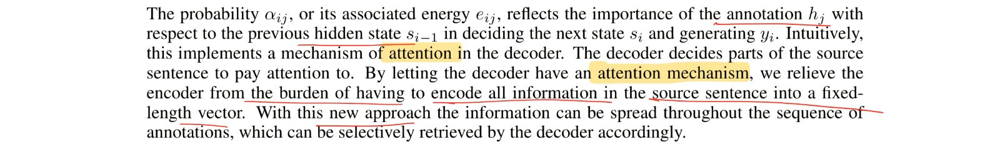
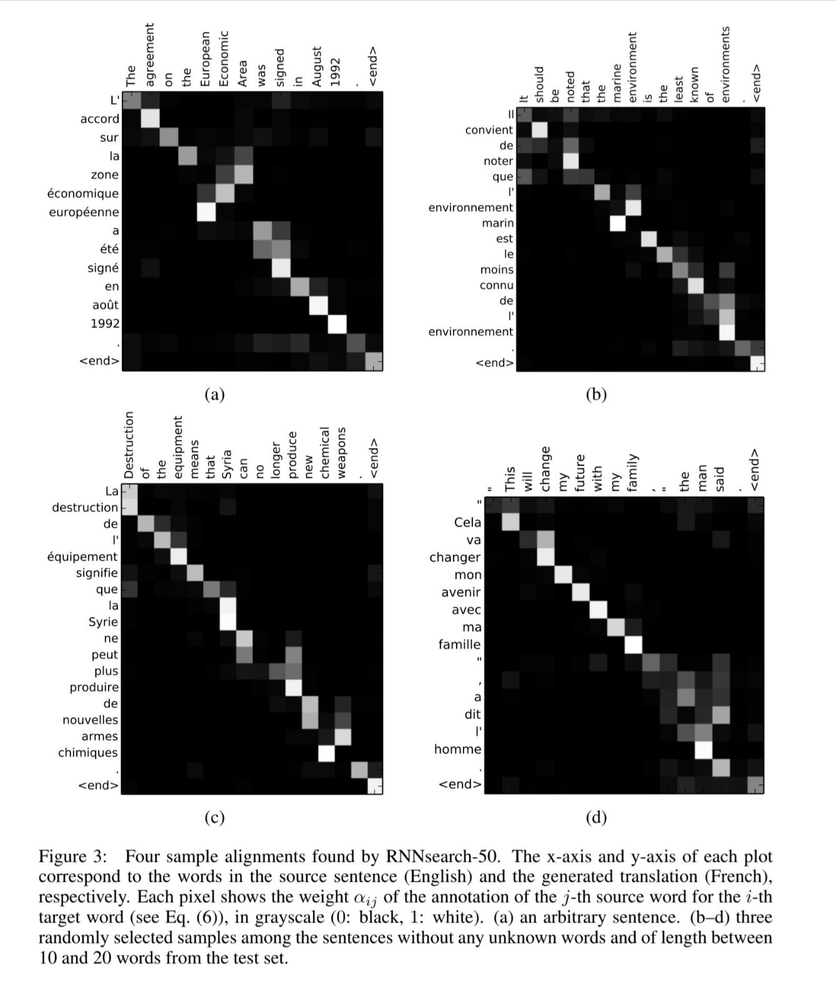

Well come on, we have heard the stories of Attention is all you need like a thousand times. And it doesn't stop here as the transformer model keeps giving us fruit, keeps creating magics. But let's look into where it all started. The insipiration of modern self and cross attention was by Bahdanau et al. when they introduced the first known idea of Attention. So the paper we are going to talk about today is nothing but Neural Machine Translation: By Jointly Learning to Align and Translate.
The Problem with Previous Architectures
Fixed-length context vector bottleneck: The major issue in previous RNN-based architectures were the context length. Machine translation often came across longer sentences and caused a fixed-context length bottleneck issues. In vanilla seq2seq (Sutskever et al., 2014), the encoder compressed the entire source sentence into a single vector.
 We can see the image shows two diagrams highlighting problems in early seq2seq models. The first diagram illustrates the fixed-length context vector bottleneck, where all input words are compressed into a single vector before decoding, leading to information loss. The second diagram shows the difficulty in handling long sequences, where longer sentences overload the single context vector, making translation less accurate.As the authors described below,
the issues lie in context length and forming a higher order understanding of the input text to translate into another vector space (the target language vector space).The Beginning of Attention
And that is how the authors came up with the revolutionary idea to formulate a mutual understanding of tokens in the input space as well. Quoting the following lines from the paper, the authors how each token needs to concentrate on the other tokens and find out the relevant information to answer the question. This is how the context vectors are defined as well.
The Architecture
The context vector is defined as a weighted sum of the encoder hidden states,
The weights are defined as follows,
So, to have higher level intution about it, we can see the context vector is derived from hidden states and a special weight for each hidden state at that particular time instance. Now, this weight is determined by a softmax of scores which in turn is a non-linear function of the previous decoder state and the encoder hidden state.
So, the model learns to pay attention to certain words from the whole context given the last predicted word. This helps the model in finding out which is the most relevant next token.
Moment of Truth
 So, to explain all this in layman terms, the authors described the method of concentrating on all hidden states given last token predicted and creating context vector as method of providing Attention. And there starts the never ending journey of attention mechanism.How It All Worked Out
Before finishing this small read, I will add one more thing from the paper. The following section from the paper where the authors have shown the learnt context vector weights for each token. You see the similarities between similar meaning words.  Ofcourse, with evolving time the attention mechanism has evolved a lot. But the core idea remains the same and so does the heatmap of attention weights.Conclusion
This is my first blog of this kind in whatsoever platform. So I'm not sure if the explanation and
descriptions were adequate. I prefer if you do reach out to me about reviews through my email: tathagata2403@gmail.com.
The reason why I decided to write this is because since the firts time I read the paper, I wanted to
find a this kinda intuitive explanation of what's going on and never really found one. So I decided to
write one myself. And my self obsession led me to belive that this is by far the best explanation
there is. Please do break my bubble if you find any better one.